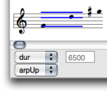
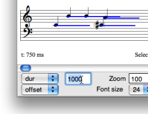
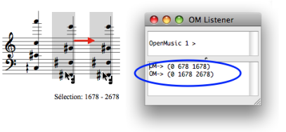
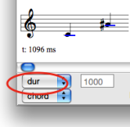
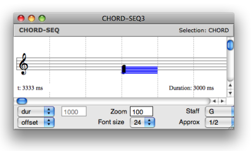
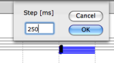
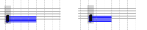

OpenMusic DocumentationHiérarchie de section : OM 6.6 User Manual > Score Objects > Score Editors > Harmonic Objects > Other Slots
OpenMusic DocumentationHiérarchie de section : OM 6.6 User Manual > Score Objects > Score Editors > Harmonic Objects > Other Slots
Navigation : page précédente | page suivante
Attention, votre navigateur ne supporte pas le javascript ou celui-ci à été désactivé. Certaines fonctionnalités de ce guide sont restreintes.
Editing Other Slots
Displaying Modes
Features

|
The editor control upper menu gives access to each slot of the object. The displaying of a slot value can be combined with displaying mode of the lower menu. |
Edition
Chords : Duration, MidiChannel, Dynamics
The duration of one or more selected note can be modified with the same procedures as for notes.
|

|
Chord-Seq : Offsets
The chords onsets in a chord-seq can be modified from the second chord.
Select the chord tool.
Use one of the following procedure :
- drag and drop the item(s)
- use the
→or←keys : the offset value is decreased or increased by 100 milliseconds steps. AddSHIFTto change the value by 1000 midicents steps.

Modifying the offset of a chord "manually".
Legato
To display the legato value of notes in a chord-seq, select the |

|
Reminder : Pitch
Modifications can apply to notes, or to whole chords or chord-seqs .
|
{kind=link}
Grid
- To display or hide a grid in the editor, press
g. - To adjust an item to and its duration to the grid, select it and press
a.
The duration change is effective if the initial duration value is close to that of the grid's step.

To change the grid's step, press |

|

|
To move the item or change its duration according to the grid's step, press |
Références :
Plan :
Navigation : page précédente | page suivante
A propos...(c) Ircam - Centre Pompidou